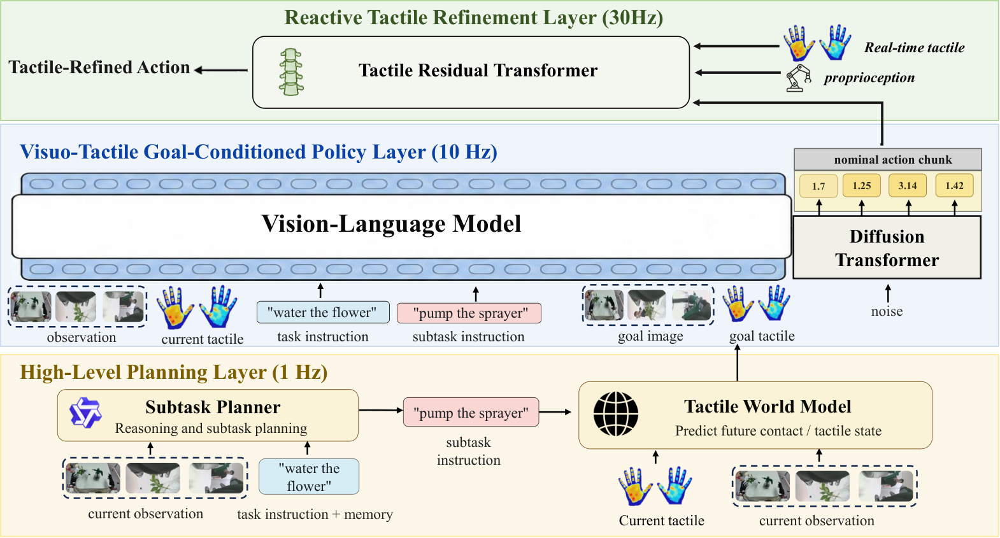

TouchWorld
把语义规划、触觉目标预测与高频残差修正拆到三个时间尺度上各自跑。
TouchWorld: A Predictive and Reactive Tactile Foundation Model for Dexterous Manipulation
六任务各 100 次回放：干净设置平均 65.0%，人为扰动下 53.7%，比最强基线 FTP-1 高 15.7 与 18.5 个点（表 1）。
01这篇要解决什么？
多数触觉策略把触觉当成又一路观测塞进同一个模型，于是慢的语义推理、中速的动作生成和快的接触反馈共用一套容量、挤在一个控制周期里。这篇的主张是把这三件事拆开跑，并让触觉同时承担两种角色：既是预测出来的接触参考，也是实时的反馈信号。
02先看一个场景
指令是把电源插头插进插座。机器人已经对准插孔，推进的时候人从旁边轻轻碰了一下手腕，插头偏出两毫米就再也进不去。另一个场景里抽纸被拉出一半后打滑，画面上手指还贴着纸，纸却没再动，等下一块动作生成出来时早就来不及了。
03方法怎样运转？

- 01
子任务规划器：现成 4B 模型加记忆，作者微调
规划器从 Qwen3-VL-4B-Instruct 起步，用 LoRA 监督微调，训练集 128866 条，秩 16、跑 20 轮。输入是任务指令、当前画面与一份记忆，记忆里存过去的子任务、预测过的触觉子目标与执行状态；输出只有一条可执行子任务，自由形式的推理不进动作接口。
- 02
触觉世界模型：先学人手，再学机器人
世界模型从 Wan2.2-TI2V-5B 起步，先在 EgoTouch 人手交互视频上预训练，再用 LoRA 在 10 小时机器人演示（约 108 万帧）上微调。人手与机器人触觉布局不同，统一渲染成图像形式对齐；样本是 2×2 观测网格，预测 17 帧视触子目标。
- 03
标称策略：把触觉画成图像，走同一条视觉语言通路
标称策略是视触扩散 Transformer，用流匹配生成 32 步动作块。触觉不走单独编码器，而是渲染成图像与 RGB 一起进视觉语言分支；提示把原任务和当前子任务拼起来；世界模型的预测网格有就当额外目标上下文。动作 120 维。这条分支从哪个预训练权重初始化，论文没有给出。
- 04
触觉残差 Transformer：全系统唯一的快通路
TRT 是 512 宽、8 层的小 Transformer，吃滑动的 16 步标称前瞻窗、近期触觉与本体历史，以及标称策略的上下文 token，输出残差窗加回标称动作。它只改 58 维触觉敏感子空间，其余维度照搬标称输出。训练时标称策略冻住，目标是演示高频动作与标称动作之差。
- 05
三层各自的刷新节奏与终止
高层按固定的慢语义速率更新，世界模型只在子任务或任务相位变化时才重算，稳定阶段复用上一份子目标。标称策略每 32 步出一块，TRT 在块内按偏移 0、4、8、12 刷新，每次只提交前 4 步。终止由规划器的相位判断驱动。真实反馈频率取决于控制频率与感知链路，论文没有给出赫兹。
while not done:
sub = planner_qwen3vl4b(task, image, memory) # 慢语义层，作者 LoRA 微调
if planner_says_phase_changed(memory, sub): # 相位没变就复用上一份子目标
goal = world_wan22(task, sub, image, tactile) # 17 帧视触子目标
chunk, ctx = nominal(task, sub, goal, image, state, tactile) # 流匹配，H=32
for off in [0, 4, 8, 12]: # 块内高频刷新
window = chunk[off:off + 16]
d = TRT(window, state_hist, tactile_hist, ctx) # 只改 58 维触觉敏感子空间
execute((window + d)[:4]) # 提交 4 步，再用新触觉刷新
memory.append(sub, goal, status) # status 由谁判定，论文没有给出
# 没有失败检测，没有重试：所谓修正就是残差叠加方法与结果的原文定位见本页引用。
04跟着这个场景走一遍
教学推演：回到上面的场景。第一步，子任务规划器看着当前画面和那份记忆，把插好电源插头这条指令切成当前该做的一段，比如对准插孔并推入；它只输出这一句，自由形式的推理不传给下层。第二步，触觉世界模型接过这句子任务，在 2×2 的观测网格上预测一段 17 帧的视触子目标，画出插到位时指尖压力该长什么样；这份预测只在相位变化时重算，插入过程中一直复用。第三步，标称视触策略把 RGB、渲染成图像的触觉、本体状态和拼好的任务加子任务提示一起吃进去，用流匹配吐出 32 步动作块和一个上下文 token。第四步，手腕被碰了一下，残差层在下一次刷新时看到近期触觉历史变了，在 16 步前瞻窗上算出一个残差，只改那 58 维触觉敏感维度，加回标称动作后提交 4 步，之后每 4 步再刷新一次。第五步，插入完成后规划器切到下一段子任务，世界模型这时才重新预测。要点明这套机制没做到什么：整个过程里没有任何模块判定这一步失败了，修正是连续叠加的残差，不是检测加重试；一旦碰偏到超出残差子空间能拉回的范围，系统不会退出来重新对准。规划器的记忆里确实有一项执行状态，但它由谁判定、判错之后有没有回退，论文没有给出。
05实验到底表现怎样？
六个真机任务：浇花、桌面清理、放杯、插电源插头、擦锅、抽纸。平台是带灵巧手与 JQ 触觉手套的人形机器人，遥操作用 Meta Quest 头显加手套。每任务 200 条演示、100 次真机回放，每项都分干净设置与人为扰动设置，扰动包括移动目标、破坏接触与干扰抓握。
作者报告的实验结果 · v2
| 方法 · 表 1 六任务平均 | 干净设置 | 人为扰动 |
|---|---|---|
| Pi-0.5 | 40.7% | 27.7% |
| FTP-1（单体触觉策略） | 49.3% | 35.2% |
| GR00T N1.7 | 39.3% | 26.0% |
| TouchWorld | 65.0% | 53.7% |
| TouchWorld · 插电源插头（最难一项） | 45% | 35% |
原始证据：三层结构与调度：§2 ↗ · 主结果：表 1 ↗ · 世界模型预测精度：§4.5 ↗ · 实现细节：§8 ↗
两列对着看才有意义：扰动下所有方法都掉，按表 1 两列相减（论文未印出差值），TouchWorld 掉 11.3 个百分点，Pi-0.5 掉 13.0、FTP-1 掉 14.1。也别把 65.0% 当成整体可用：插电源插头在干净设置下只有 45%，最好的浇花也只有 72%。三个基线里只有 FTP-1 用触觉，和另外两个比更像在比有没有触觉。
06收益来自哪里，又停在哪里？
消融与机制证据
消融只有图 5 的堆叠柱状图，正文没有给出任何数值，只说去掉触觉输入掉得最多、去掉残差层主要伤扰动设置。能核对数字的是另两张表：表 2 里世界模型的接触 IoU 是 52.7%，直接复制当前触觉只有 31.8%；表 3 里带记忆的 4B 规划器子任务准确率 88%，零样本 32B 是 69%。
结论的适用边界
模型来源分两层。现成底座：子任务规划器是 Qwen3-VL-4B-Instruct，世界模型是 Wan2.2-TI2V-5B，人手预训练用公开的 EgoTouch 数据。作者训练的：规划器的 LoRA 微调、世界模型在 10 小时机器人演示上的 LoRA 微调、标称视触策略的完整训练，以及残差 Transformer；标称策略那条视觉语言分支从哪个权重初始化，论文没有给出。四个阶段分开训、不做端到端反传，因此整体收益不能记到某一个模块头上。基线这一侧要留神：论文没有说 Pi-0.5、FTP-1 与 GR00T N1.7 有没有在同一批每任务 200 条演示上微调，也没有说除 FTP-1 外谁拿得到触觉输入，所以表 1 的差距里混着数据与模态两个变量。系统被称作高频，但真实反馈频率取决于控制频率与感知链路，论文没有给出赫兹。作者自述的限制包括六个任务不足以覆盖家务多样性、子目标只做短视野预测、换触觉传感器或手型仍需标定与少量适配数据。
07放回全书的脉络
与 EMERGE-Policy 对照：都做分层，但那边靠结构化证据推进，这边只靠相位切换。与 π₀.₅ 比，多出来的是预测性触觉目标和一层快反馈。
08把阅读变成一个小研究
固定标称策略，只改残差层的提交间隔，在扰动设置下比较提交 1 步、4 步、8 步的成功率。
先自己回答：这项实验怎样才有解释力？
要同时记单位时间里的残差刷新次数。若成功率随间隔缩短而升，才支持快反馈的说法；若不变，收益更可能来自残差这种参数化本身。
- 用自己的话说出这篇改变了哪个模块。
- 画出它的输入、输出和一次失败如何被处理。
- 复述一个结果，同时说清基线、指标与实验条件。这一问不给答案，材料在第 05 节。
先自己答，再看前两问的参考答案
这篇改了哪个模块改的是策略的分层方式与运行节奏，而不是任何单个模型的能力。视觉语言主干与世界模型主干都是现成的开源权重，动作空间、任务集合与评测协议也都不变。没有改的是训练上的一体化：四个阶段各自用匹配自己时间尺度的监督分开训，不做跨层端到端反传，残差训练时标称策略是冻住的。新增的是三件事：一个带记忆、只输出可执行子任务的规划器，一个预测未来视触子目标的世界模型，以及一层只在触觉敏感子空间上改写标称动作的残差 Transformer。
输入、输出与一次失败如何被处理输入分三路进不同的层。规划器拿任务指令、当前画面与记忆，输出一条可执行子任务；世界模型拿指令、这条子任务、画面与触觉，输出一段 17 帧的视触子目标网格，只在相位变化时重算；标称策略拿上述全部加本体状态，输出 32 步动作块与一个上下文 token；残差层拿这个 token、16 步标称前瞻窗和近期触觉与本体历史，输出一个残差窗，加回标称动作后提交前 4 步。失败没有检测，也没有恢复通路。这套系统里的修正是连续的残差叠加，不是判定某一步失败再重试：残差层每 4 步用新的触觉读数刷新一次，接触偏了就在下一次刷新里被拉回来一点，没有任何模块会宣布这一步做砸了。规划器的记忆里确实存着一项执行状态，但这项状态由谁判定、判错之后有没有回退，论文没有给出。
把语义规划、触觉目标预测与高频残差修正拆到三个时间尺度上各自跑。
↗带着位置回到原文
首发日期用于时间排序；以下方法与结果对应 v2。数据为论文作者报告，本讲义没有独立复现实验。
QA就这一页提问或讨论
对某个数字、某条边界或某个推演有疑问，欢迎直接留言：讨论按页面分开，回复会保留在 XinrunXu/awesome-agentic-robotics-papers 的 Discussions 里，需要一个 GitHub 账号。